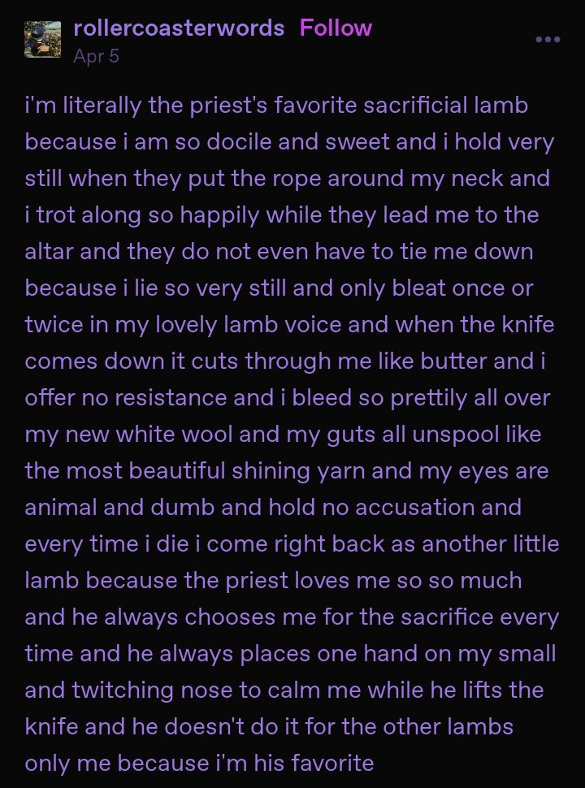

(9:49 pm) last night i was cooking pork to freeze so i can make tacos whenever i want. so i have more options to eat at night instead of making the same thing over and over and over. narkis just pressure cooks or boils his pork with mild boring spice and refries it when he wants to eat it. he said its important that the pork youre cooking is skin on for this to work because the skin breaks apart and filters in with the meat and i cant stop thinking about biting through skin about how good it must feel to be a wolf biting through a deers skin. about how much warmer the deers blood is than the wolves own mouth. about how for one moment, while full of panic, the increase pressure in the deers veins felt good to the deer too. ill finish this more after i go to the grocery store and buy the ingredients i need for my planned lunch of scrambled eggs bacon and a baguette.
(10:31 pm) ill never be satisfied because i wont ever look textured like a lovely oil painting. glinting in just the right way.
(almost 8pm) "sorry for the delay of my reply. i am simply too old and tired for such things. i lack concentration. it's sad" "your great temptation: inability to cope with necessity in its purest form, which is time; the most shameful temptaion is to escape it my unawareness or to submit blindly to it..." "all of use, even the youngest, are in a situation like socrates when he was awaiting death in prison and learning to play the lyre" ive only been awake for so short a time and im already so tired but i can haven no rest. so little rest. i refuse the rest ive already rested far too much. its funny that richard siken's crush is described as poetry of panic, maybe if i reread it i would understand what is meant by that, maybe when i reread scheherezade last year and i became inconsolable to a degree that i still have not recovered from because i did not and do not wish to recover from, i began to panic in some new way that was intended. intended by him maybe, intended by me mostly. today i bit all of my nails because ive still not become capable of avoiding every situation i want to avoid because i am stuck in a balance of waiting that i do not want to be in anymore. its not due to impatience that i bite my nails when i wait its that still things must happen. i do not submit to it anymore. i am so not okay and am just mostly fine, i hope you understand what i mean. i hope youre okay even though im not and have no intention of every being okay again. when kim visited a few weeks ago i cooked dinner for her twice. when she tried to remake what i made for her she said she burnt it. im going to record myself remaking it for her and hope that she cant taste something similar to what i made.